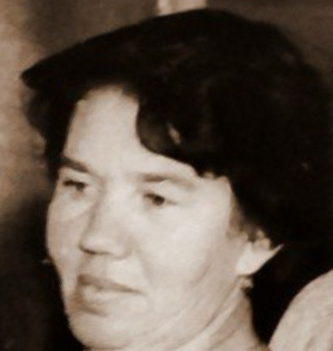

🕯️
0

Миля Илларионовна Карелина
11.12.1935 - 27.03.2013
Прошло дней с ухода:
Я всё сполна вам здесь, на этом свете раздала.
Живите щедро, не тая, открыто,
как я жила — от всей души, любя.
Чтоб ваше сердце было не разбито,
а лишь добро дарило, как и я.
Хронология жизни
1935
Родилась 11 декабря в городе Вологда (на фото примерно 13 лет. Рядом стоит сестра Лина, на руках брат Валентин)
1950-е
Начала трудовую деятельность продавцом
1960-е
Вышла замуж за Карелина Льва Алексеевича
1961
Рождение двойняшек — Сергея и Ольги
1973-1991
Работа в горгазе, проверка газового оборудования
1981
Овдовела
1987
Путешествие в Германию
2000-е
Работа на рынке после пенсии, помощь семье
2013
Ушла из жизни 27 марта
🕊️
Место упокоения
59.157658
,
39.910106
Рада,что вы пришли.Посидите в тишине,здесь она особенная...
🗺️
Открыть на карте
Память всегда с вами

Отсканируйте, чтобы открыть страницу